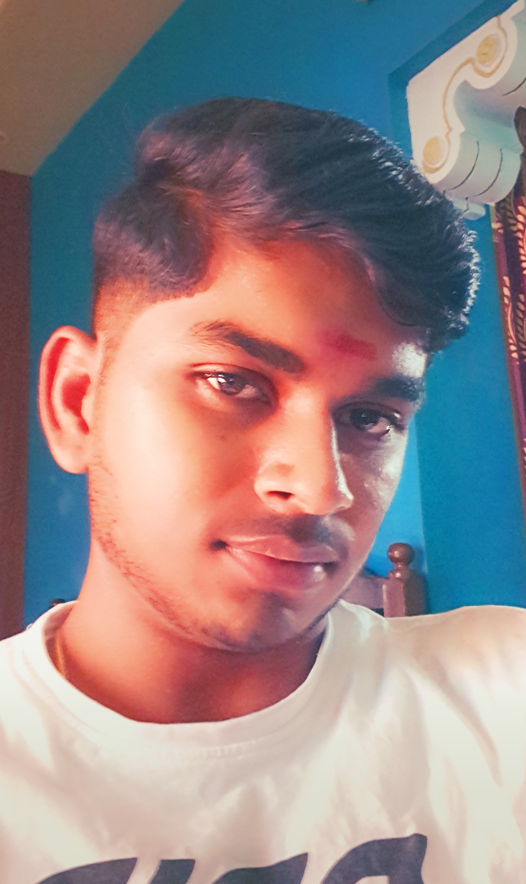

Welcome TO AWTS Site
IF YOUR TIRED , TAKE REST BUT DON'T QUIT
Designed By,
Subash Chandra Bose.M
Subash Chandra Bose Murugan(born January 7,2006,T.Kallupatti,Madurai,Tamil Nadu)Student curently...
|  | Designed By,Subash Chandra Bose.M | Subash Chandra Bose Murugan(born January 7,2006,T.Kallupatti,Madurai,Tamil Nadu)Student curently... |
Introduction:In every generation, there emerges a student whose dedication, passion, and thirst for knowledge set them apart from the rest. Today, we have the privilege of introducing you to an extraordinary individual whose journey through education has been nothing short of remarkable. Meet Subash, a student whose unwavering commitment to learning has led them on a path of self-discovery, personal growth, and academic excellence.
Unquenchable Curiosity:From an early age, Subash demonstrated an unquenchable curiosity about the world around them. Whether it was the sciences, humanities, or arts, they approached each subject with an insatiable desire to explore and understand. This innate thirst for knowledge has been the driving force behind their academic pursuits and has undoubtedly played a pivotal role in their extraordinary achievements.
Academic Excellence:Throughout their educational journey, Subash has consistently demonstrated exceptional academic prowess. Their commitment to excellence and relentless pursuit of knowledge have earned them recognition from peers and educators alike. Achieving top grades in various subjects and consistently being at the forefront of academic competitions, Subash has become a role model for fellow students, inspiring them to strive for greatness.
Passion for Community:However, Subash's achievements extend beyond the classroom. They have also shown an unwavering commitment to making a positive impact on their community. Engaging in numerous extracurricular activities, volunteering initiatives, and leadership roles, they have dedicated their time and efforts to causes close to their heart. Their compassionate nature and desire to create change have made a significant difference in the lives of those around them, proving that education goes beyond textbooks and classrooms.
Resilience and Determination:While Subash's journey has been marked by success, it has not been without its fair share of challenges. However, what sets them apart is their unwavering resilience and determination in the face of adversity. Whether it's overcoming difficult coursework, managing time constraints, or balancing extracurricular commitments, they have demonstrated remarkable strength and tenacity. Their ability to embrace challenges head-on and emerge stronger from them is a testament to their character and unwavering spirit.
The Future Ahead:As Subash continues to navigate their educational journey, the future looks exceptionally bright. Their insatiable curiosity, academic prowess, and dedication to community service make them a promising candidate for any field they choose to pursue. Their tenacity, resilience, and passion will undoubtedly continue to propel them towards their goals and shape them into a future leader and trailblazer.
Conclusion:In the realm of education, some students stand out not only for their exceptional academic achievements but also for their dedication to personal growth and service to the community. Subash is one such student who has left an indelible mark on the hearts and minds of those around them. Their remarkable journey of learning, resilience, and growth serves as an inspiration to all, reminding us that with determination and a thirst for knowledge, anything is possible. As they continue to carve their path towards a bright future, we eagerly await the extraordinary contributions they will undoubtedly make to society. | ||
|---|---|---|---|---|---|